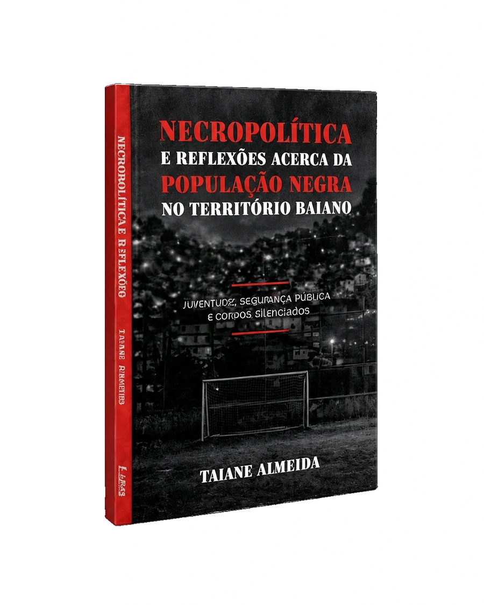

Juventude, Segurança pública e Corpos silenciados
A partir da Chacina do Cabula, ocorrida em 2015 em Salvador, este livro investiga como a imprensa baiana narrou o episódio e as disputas de sentido que envolveram versões policiais, denúncias do Ministério Público e as vozes silenciadas das vítimas e de suas famílias.
Em diálogo com o conceito de necropolítica, a obra convida o leitor a refletir sobre a distribuição desigual da proteção à vida e da exposição à morte, e sobre como certos corpos e territórios são historicamente marcados pela violência do Estado.
Este texto é um rascunho para o protótipo; pode ser substituído a qualquer momento pela sinopse definitiva.

Reconhecer os mecanismos que naturalizam determinadas mortes significa também reafirmar o direito à vida, à memória, à justiça e à dignidade humana.
Ao final, permanece uma questão simples e perturbadora: por que algumas mortes provocam comoção, enquanto outras são rapidamente transformadas em mais um número?
Juventude, segurança pública e corpos silenciados
A violência não se distribui ao acaso, ela se inscreve em corpos e territórios historicamente marcados pelas desigualdades.
Escritora, produtora e cientista social
Cientista social, mestra em Ciências Sociais pela Universidade Federal do Recôncavo da Bahia (UFRB), professora de Sociologia, pesquisadora e produtora cultural. Sua trajetória é marcada pelo estudo das relações entre mídia, segurança pública, violência de Estado, desigualdades raciais e territórios negros.
Quais mortes produzem indignação pública e quais violências seguem sendo narradas como parte natural da ordem social?
"Um trabalho rigoroso que conecta teoria social e realidade concreta das periferias baianas com muita sensibilidade."
"Taiane consegue transformar uma dissertação acadêmica densa em uma leitura urgente e acessível a todos os públicos."
"Uma contribuição essencial para pensar racismo, mídia e segurança pública no Brasil contemporâneo."
* Depoimentos simulados para este protótipo; serão substituídos pelas falas reais assim que você me enviar.
Mídia, Segurança Pública e a Chacina do Cabula (PPG em Ciências Sociais: Cultura, Desigualdades e Desenvolvimento, UFRB).
Espaço reservado para os artigos e publicações da autora; conteúdo a ser enviado.
Ações de produção cultural e valorização da memória em comunidades; descrição a definir com a autora.
[...] fazer com que ações letais sejam apresentadas como necessárias à preservação da ordem, enquanto determinadas mortes são naturalizadas ou reduzidas a consequências inevitáveis da segurança pública.
Apoio institucional